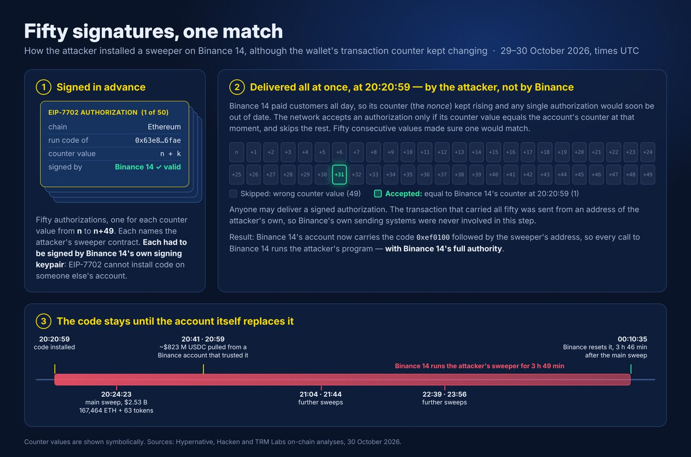
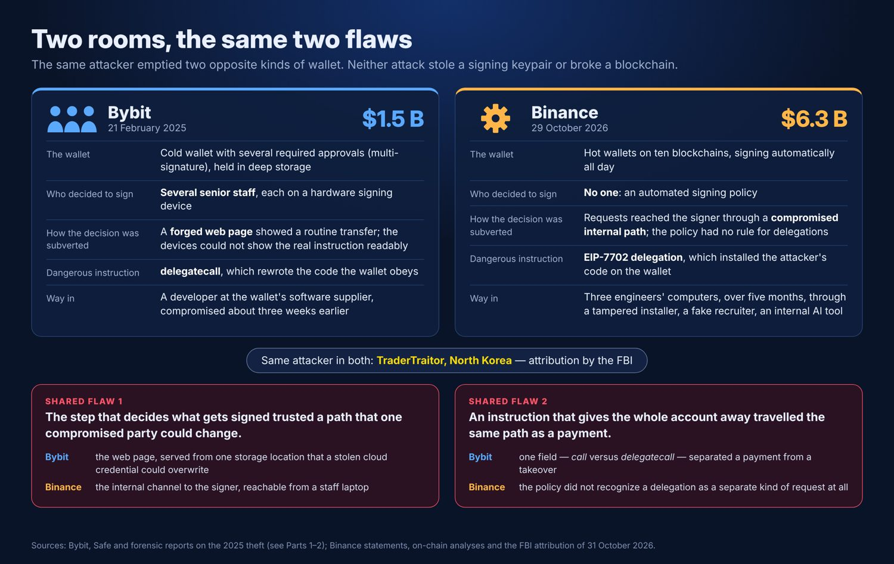
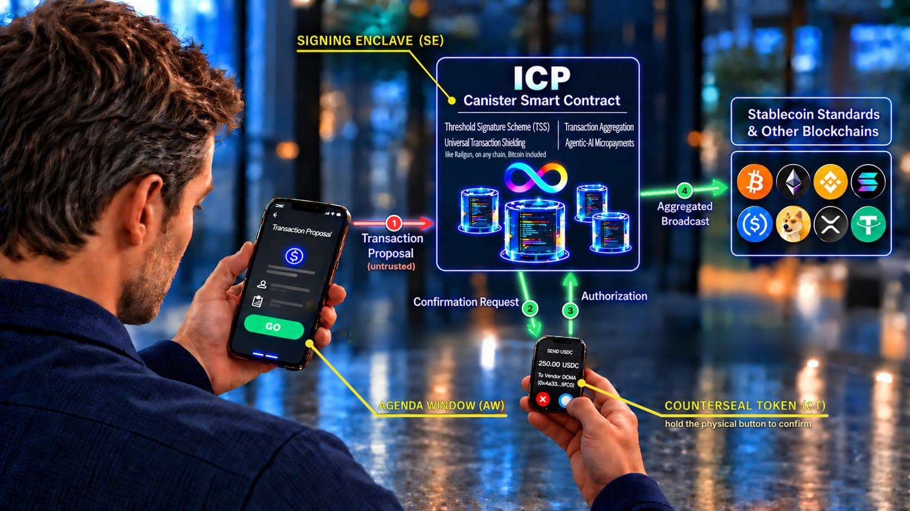

- In October 2026 the same attacker took $6.3 billion from Binance’s automated hot wallets.
- No one was deceived: Binance’s own signing system signed fifty authorizations that handed over a wallet.
- Bybit and Binance failed in the same two ways, and a smaller theft at Bitget five weeks earlier shows the first is enough by itself. An architecture can be built without them.
A room with no people in it
Bybit’s room was full of people. Part 1 described them: senior staff at a scheduled ceremony, each with a hardware signing device, each reading a screen and approving what it showed. The attack had to fool every one of them, and it did, by forging the screen.
Binance’s room was empty, and it was built that way on purpose.
The wallet at the center of this story is called Binance 14 on the public block explorers. It is a hot wallet: an exchange account whose signing keypair stays online, inside the exchange’s systems, so that withdrawals can be approved and signed automatically, thousands of times a day, without anyone pressing a button. Every large exchange runs hot wallets. The alternative, a person approving every customer withdrawal on a device, would stop the exchange from working. So the protection on a hot wallet is not a person. It is a signing policy: software standing in front of the signing keypair that decides which requests to sign and which to refuse. The private half of the keypair is never handed to anyone. It sits in protected hardware, or it is split into shares held on several machines, which produce each signature together without the whole private half ever existing in one place. The second arrangement is called multi-party computation (MPC), and Binance’s report says Binance 14 used it.
At Bybit the attacker had to deceive humans. At Binance there were no humans to deceive, only a policy. And a policy, unlike a person, can be studied in advance and fed exactly what it accepts.
The evening of 29 October
The record, assembled by the blockchain-analysis firms that watched it happen and, for what happened inside Binance, by the exchange’s own report of 3 November, reads as follows.
The day before. The attacker’s operating wallet was funded with three small withdrawals from Tornado Cash, a service that hides where cryptocurrency came from, starting on the morning of 28 October. TRM Labs dates the visible preparation to at least 36 hours before the theft. Later the attacker tested a “sweeper” contract (a program whose only job is to move everything in an account to the attacker) on disposable wallets. At 15:59 UTC on the 29th they deployed the live one to Ethereum. It sat there in public, doing nothing, like the contracts deployed three days before the Bybit theft.
The hours before. According to Binance’s report, between 17:15 and 19:56 on the 29th (the report states no time zone for this window; its other times are in UTC) the attacker logged on to one engineer’s computer and, using a credential stolen from another engineer’s computer, deployed a container (a packaged program that runs on a company’s servers) inside Binance’s systems. A script in that container reached Binance’s internal wallet-signing service. How the attacker came to control those computers is described below.
About 20:05 UTC. The theft began on the XRP Ledger and Solana. Over the next half hour Binance hot wallets on Base, Optimism, Bitcoin, Tron, Arbitrum, Avalanche and Ethereum sent their balances out, and a second, smaller wave after 23:00 UTC hit wallets on Avalanche and Polygon. TRM counted roughly $6.36 billion leaving Binance wallets on ten blockchains, most of it in about twenty minutes. On nine of those chains, and from a second Ethereum wallet labeled Binance 16, nothing unusual happened at the level of the blockchain. Binance’s wallets simply sent their balances to the attacker, with valid signatures, as if Binance had asked them to.
20:20:59 UTC. On Ethereum the attacker did something different, and it is the part of the story that made the headlines. One transaction arrived carrying fifty signed authorizations, all produced by Binance 14’s own signing keypair. Their effect was to make Binance 14 run the attacker’s sweeper contract as if it were its own code.
20:24:23 UTC. The attacker called the sweeper, and Binance 14 emptied itself: 167,464 ETH and 63 different tokens, the largest single item about 1.61 billion USDT. That one transaction was worth about $2.53 billion, roughly two-thirds of everything lost on Ethereum.
The next three and a half hours. The arrangement stayed in place, and the attacker kept using it. At 20:41 and 20:59 UTC, acting as Binance 14, the attacker pulled about $823 million in USDC out of a separate Binance account that trusted Binance 14. At 21:04, 21:44, 22:39 and 23:56 the attacker swept Binance 14 again, collecting whatever had arrived since. Some of what arrived was sent by Binance itself. The 21:44 sweep took about 200 million USDT that Binance’s own internal systems had moved into the wallet a few minutes earlier, eighty minutes after the main sweep. (It went to an address that Tether had already frozen.)
00:10:35 UTC, 30 October. Binance 14 signed a new authorization cancelling the arrangement, 3 hours 46 minutes after the main sweep. Binance’s report gives a reason for the delay: because the wallet used MPC, there was no single private key with which a cancellation could be signed at once, and a special procedure had to be developed and carried out. The report also says that suspending withdrawals could not, by itself, stop the unauthorized movements. The delegation was recorded on the blockchain, outside Binance’s systems, and it went on working whatever Binance switched off.
By the morning Binance had confirmed a loss of about $6.3 billion, a figure it later put at $6.34 billion. It was the largest theft on record, more than four times Bybit’s.
Fifty signatures, explained
The fifty authorizations need explaining, because the trick is clever and the explanation shows what was actually broken.
Ethereum has two kinds of account. An externally owned account is controlled by one signing keypair and has no code: whoever produces a valid signature can make it do anything. A contract account runs a program, and the program decides. Binance 14 was the first kind.
In May 2025 Ethereum added a feature called EIP-7702. It lets an ordinary account point at a contract and run that contract’s code as its own. The intended uses are convenient ones, such as bundling several actions into one transaction or letting someone else pay the fee. The mechanism is a signed authorization that names a contract. Three of its properties set up the evening of 29 October:
- Anyone can deliver it. The authorization must be signed by the account, but the transaction that carries it to the blockchain can be sent by anyone. That is what makes fee sponsorship possible. It also means that whoever holds a signed authorization can use it whenever they choose.
- It stays. Once accepted, the arrangement remains until the account signs a new authorization replacing it. Money that arrives later is also controlled by the new code.
- It is tied to a counter. Every Ethereum account has a nonce, a counter that increases with each transaction it sends. An authorization names one nonce value and takes effect only if the account’s counter has exactly that value when it arrives. If not, it is skipped.
That last property was the attacker’s problem. Binance 14 was a busy wallet, sending customer withdrawals continuously, so its counter kept moving. An authorization signed for one value would be stale minutes later. The solution was to obtain fifty, for fifty consecutive counter values, and deliver them all at once. Whatever the counter showed at 20:20:59, one of the fifty would match. Exactly one did. Figure 4.1 shows the sequence.

Now the important part. Every one of the fifty had to be signed by Binance 14’s own signing keypair. EIP-7702 has no way to install code on someone else’s account. The blockchain checked fifty genuine Binance signatures and did what they said. Ethereum was not broken. Binance’s signing system had signed, fifty times, a kind of instruction that hands over the whole account.
Binance’s co-CEO, Richard Teng, said it in one sentence: “That delegation did not pass through our normal approval controls.”
That raises a question the early reports passed over: where were the fifty signatures kept until 20:20:59? In a conventional signing arrangement a signature does not stay with the signer. It travels back to whoever asked for it, and that party assembles the final transaction and sends it to the network. Each step of that exchange is a trip between the requester and the signer: the request goes out, the signature comes back, the assembled transaction goes out again. Every trip is a point at which a compromised requester can shape what is signed, or keep what comes back. An EIP-7702 delegation adds trips of its own, because the authorization is signed first and carried to the network later, inside a separate transaction that anyone may send.
That round trip is what made a stock of fifty signed authorizations possible. Analysts describe signatures obtained ahead of time and then used in a single burst: requested through the compromised side, signed by Binance’s system, returned to the compromised side, and held there until the wallet’s counter would match. Binance’s report has since said where the requests came from: a script in the container the attacker had deployed inside Binance’s systems. Whatever else remains to be explained, the signatures could be collected only because they came back.
The convenient suspects, again
Part 1 warned that the first explanation of a theft like this is usually the comfortable one. Binance’s case produced two, both in the first official statement, and both deserve the same scrutiny.
The first comfortable explanation: one laptop. Binance’s preliminary finding, published early on 30 October, was that the incident may have started with a compromised laptop belonging to a DevOps engineer (one of the staff who run the exchange’s servers). Within a day Binance corrected itself: its investigation had found additional points of breach, and Teng said the attack “was not carried out by one person.”
The report Binance published on 3 November replaces the one laptop with a campaign of five months against three engineers who worked on its wallet systems. In June a DevOps engineer on the wallet team, whom the report calls Engineer A, searched for a popular AI coding tool and installed it through a tampered copy of Homebrew, a standard tool that developers use to install software. Binance’s security staff caught that intrusion. They replaced the computer and changed the credentials, but the attackers had already learned who worked on the wallet systems and in what roles. In September people posing as a hiring company approached a second wallet engineer, Engineer B, on a job site. In the second interview a supposed chief executive asked the engineer to download a coding assignment. It ran on the engineer’s work computer and replaced part of an ordinary development tool with a malicious version, which Binance’s security software did not detect at first. This is the method Part 2 described at Safe, step for step: a recruiter’s approach, a coding exercise, and a developer persuaded to run something that looks like work. On 20 October the attackers used Engineer B’s computer and one of Binance’s own internal AI tools to take over two more computers: Engineer A’s, and that of a software engineer, Engineer C. On Engineer A’s computer they found a token that allowed whoever held it to deploy containers. Nine days later they used it.
The report opens with the sentence “This should not have happened,” and it is unusually open about the route in. It says much less about the question that matters more. On what has been published so far, it does not explain why the signing service accepted requests from a container deployed the same day, or how fifty authorizations of a kind this wallet had no reason ever to sign passed whatever checks the service applies.
The laptops were never the important part. What matters is the path that existed from an ordinary staff computer to a system able to request withdrawals, and the fact that nothing along that path could tell the attacker’s requests from Binance’s own.
Put in engineering terms, the route ended in a single factor. A protection is only as strong as the least protected point from which it can be reached, and here that point was one DevOps engineer’s computer, which held a token able to deploy containers. Whatever else Binance had in place, that one compromised factor was enough to reach a system able to request withdrawals on ten blockchains. That is a single point of failure, and this one cost more than six billion dollars. That the attackers went through three computers to get there does not change the structure. It means they had more than one way in, and each of them led to the same place.
The second comfortable explanation: no keys leaked. Binance said it had found no evidence of any wallet private key leak, and its report repeats the point. That is very likely true, and it does not reassure. An attacker who can get the signing system to sign has no need to steal the signing keypair. The private half stayed exactly where it belonged, split into shares across Binance’s signing machines and never assembled, and those machines signed what they were sent. Security engineers have a name for a signer used this way: a signing oracle, a service that returns a valid signature for whatever it is given. Binance’s keypair was never stolen. It was used.
MPC deserves a paragraph of its own, because it is often offered as the answer to thefts like this one. Splitting the private half settles one question: who can steal it. It does not touch the other question: who decides what it signs. At Binance the machines that held the shares all acted on requests arriving through one internal signing service, so whoever could feed that service commanded all of them at once. And when the time came to undo the damage, the same splitting slowed Binance’s own response.
So the answer to the question Part 1 asked of Bybit — how was the room open the whole time, and why could no one in it tell? — is, for Binance, nearly the same. The vault held. The keypair held. The blockchain held. What failed was the thing that decided what the vault would sign.
What EIP-7702 did and did not do
EIP-7702 drew most of the commentary, so it is worth stating its role precisely.
It did not cause the theft. Roughly $2.7 billion left Binance with no delegation involved: ordinary transfers from a second Ethereum wallet, and withdrawal transactions on Bitcoin, Tron, Solana, the XRP Ledger and five other chains. The attacker could produce valid Binance signatures for ordinary withdrawals on ten chains. The delegation on Binance 14 was an extra step on one of them.
It did make the theft larger and faster. More than $3.6 billion, the larger part of the total, left through that one delegated wallet. A delegation turns many withdrawals into one. It avoids any limits a policy places on individual transfers. It stays in place and keeps collecting, including what the victim’s own systems go on sending. Through the permissions Binance 14 already held, it reached money in another account. And it is slow to undo: cancelling it took Binance nearly four hours. Blockaid’s chief executive made the point that matters: the funds could in principle have been stolen without the feature, but EIP-7702 let the attacker drain the wallet in a single sweep and get around certain checks.
Readers of Part 2 will recognize the pattern. At Bybit the decisive
instruction was delegatecall: a feature that lets a wallet run
outside code as its own, sent through the same signing path as a routine
payment, differing from a routine payment by one field. Part 2 compared
it to the unrestricted goto of early programming, a
legitimate tool that can send a whole system somewhere catastrophic. It
ended with a warning: an attacker repeating the Bybit approach would not
need delegatecall at all, because the opening — a valid signature over
something other than what the signer believed — was still there.
Twenty months later the same attacker found the same opening on a different path. EIP-7702 delegation is the same kind of instruction as delegatecall: let outside code run this account. It reached the signer through the same channel as ordinary withdrawals, and the policy in front of the signer had no rule for it. Bybit’s guards could not read the dangerous instruction. Binance’s policy did not know it existed.
Two rooms, the same two flaws
Put the two thefts side by side (Figure 4.2).

The rooms were opposites. One relied on careful people and one relied on no people. The attacker got through both the same way and needed only two things.
First, the deciding step trusted a path that one compromised party could write to. At Bybit it was the web page the signers looked at, served from storage that a single stolen cloud credential could overwrite. At Binance it was the internal channel through which withdrawal requests reached the signer, open to anyone who held a deployment token that was sitting on a staff computer. In both cases the signing keypair was strongly protected, and in both cases that did not matter, because it signed whatever the deciding step accepted.
Second, an instruction that hands over the whole account looked, to the deciding step, like a routine one. Delegatecall travelled the same path as a transfer and was distinguished by one field. The EIP-7702 delegation travelled the same path as a withdrawal and was not distinguished at all.
Part 2 named both of these as structural, not accidental: they are failures of design, not mistakes by people. Binance confirms that diagnosis with a cleaner experiment than Bybit could provide. No human misread anything. No screen was forged. The design failed with no person in it to blame.
A third room, five weeks earlier
A third theft belongs in this comparison. It was smaller and drew less attention, and it happened five weeks before Binance’s, so the industry had five weeks in which to read it.
On 24 September 2026 about $387.5 million left the hot and warm wallets of Bitget, another of the largest exchanges, on eleven blockchains in a little under three hours. (A warm wallet is a tier between hot and cold: still online, but with more approvals required.) Bitget’s chief executive, Gracy Chen, said the attackers had not obtained the private key of any wallet, hot, warm or cold. According to Bitget and the two firms it retained, Mandiant and SlowMist, the attackers came in through a previously unknown flaw in security products that Bitget had bought from an outside supplier, moved from there to the server that runs the wallet system’s jobs, and installed a tool written for that system’s own withdrawal logic. Commands produced by that tool were treated by the wallet system as its own, and the transfers they requested were signed in the ordinary way by Bitget’s signing systems. Bitget described them as transfers that “bypassed existing risk controls.”
Set that beside the two flaws. The first is present in full: the step that decided what to sign trusted commands arriving from a server that one intruder could write to, and nothing after that step could tell a forged command from a real one. The second was not needed. Ordinary withdrawals were enough to empty every wallet that server could reach. So the first flaw is sufficient by itself, and the second decides only how fast and how completely a wallet is emptied.
Three further details tie Bitget to the rest of this series. Bitget and several analysis firms, Elliptic and Chainalysis among them, attribute the theft to North Korean operators, and when the money from Binance began to move, Chainalysis watched it mix with Bitget’s in the same wallets. Bitget’s systems flagged unauthorized transfers at 18:31 UTC, the minute the first one was sent, and transfers were still being signed at 21:23: detecting a theft is not the same as being able to stop it. And Bitget is the exchange that lent Bybit 40,000 ETH in February 2025 (Part 3). Its own customers were covered the way Bybit’s had been, from the company’s money: a protection fund of more than $464 million. Almost none of what was stolen was frozen, about $1.1 million in the first week.
No backstop, again
Part 3 argued that Bybit’s customers lost nothing for one reason: a solvent company chose to absorb the loss, and could. Binance repeated the pattern on a larger scale.
Binance said it set aside more than $6.34 billion of its own funds to cover the stolen assets. By 31 October it reported that it had replaced 90 percent of them, and in the first days of November 98 percent. On 12 November it said the replacement was complete and published a new statement of its reserves covering 198 tokens (the cryptographic proof that lets customers check the statement was still being generated at the time of writing). The money came from three places: its emergency fund for exactly this purpose, the Secure Asset Fund for Users (SAFU), which has historically held about $1 billion; part of the insurance fund of its futures business; and, for the rest, the company’s own treasury. Withdrawals reopened on 1 November, and in the first nine and a half hours customers withdrew $4.65 billion.
That is admirable, and it is the same warning as before. The customers were protected by the size of the company, not by the system. There was no insurance, no reversal, and no recovery of the stolen ether and bitcoin, which the FBI expects to be laundered further.
There was one partial exception, and it adds something to Part 3’s argument. Assets worth between $2.7 billion and $2.85 billion, depending on who is counting, were frozen within hours (Binance’s first estimate was about $3 billion). Nearly all of that was frozen by Tether, Circle and other issuers of tokens, and those freezes worked because those tokens have an issuer who can rewrite its own records. One network did the equivalent at the level of the chain: the Security Council of Arbitrum, a small elected body with emergency powers over that network, forcibly moved about $30 million out of the attacker’s wallet there. On 12 November the United States Department of Justice announced that it had court authorization to seize or restrain more than $1.2 billion of the frozen assets. When any of it will be returned has not been said. The only “undo” anywhere in the largest theft in history came from the most centralized parts of the system. Nearly everything else, ether and bitcoin above all, simply left. That is the trade-off Part 3 described, shown once more: finality protects the ledger and makes the theft permanent, and the only reversal available comes from an operator able to override the ledger.
What would have stopped it
The specific controls that would have stopped this attack are not mysterious, and the post-incident analyses have already listed most of them:
- Refuse what the policy does not understand. A signing policy should evaluate every kind of request it can sign, and refuse every kind it cannot interpret. An exchange hot wallet has no business reason to delegate its account to contract code. Its policy should refuse every EIP-7702 authorization outright.
- Treat a batch of authorizations over a range of counter values as an attack. Fifty authorizations for fifty consecutive nonces has no legitimate explanation. It is a sign of compromise and should stop the system.
- Refuse authorizations valid on every chain. EIP-7702 permits an authorization that is valid on every compatible blockchain at once (chain ID 0). No exchange needs one.
- Limit outflows by size and rate. A single transfer of most of a wallet’s balance, or a burst of transfers across ten chains in twenty minutes, should trigger an automatic pause, not wait for someone to notice.
- Watch for code being installed on your own accounts. The delegation on Binance 14 was public on the blockchain for about three and a half minutes before the sweep, and stayed in place for nearly four hours after it. An alarm on any change of code on the exchange’s own addresses could have cut both periods to seconds.
- Stop feeding a wallet that is known to be compromised. Eighty minutes after the main sweep, Binance’s own systems were still moving money into Binance 14. Every automatic process that sends funds to a wallet has to stop the moment that wallet is known to be out of the owner’s control.
- No standing path from a staff computer to the signer. Separation of duties, a long-established banking principle, means the people who operate infrastructure have no route to the systems that approve withdrawals, and changing the signing policy itself requires several people to approve. A credential that can deploy programs next to the signing service should not be sitting on an engineer’s laptop.
None of this is new. So the important question is why sophisticated operators keep missing it. The answer is the same structural point. Every item on this list is a rule that someone must remember to write, configure and maintain, in software running on infrastructure that the operator, and therefore anyone who compromises the operator, can change. A policy that can be changed by one compromised path is only as strong as that path. A rule that is opt-in is absent until someone adds it. Binance had approval controls, and the delegation went around them. Bitget had risk controls, and the forged commands went around those.
The lasting answer is not a longer checklist. It is moving the deciding step somewhere no single party can reach and no single party can change, and making the most dangerous instructions a class the system refuses by construction, not by configuration.
Where Counterseal stands
Disclosure, as in Part 3: the team that wrote this series is building the architecture described below. It is a wallet architecture for individuals, in development and not yet in service. Binance is a custodial exchange, and nothing here claims that this architecture would have been running inside Binance. The claim is narrower and, we think, more useful: the two failures this series has traced are structural, and an architecture can be built that does not have them.
Counterseal starts from a diagnosis this series has now reached three times. A general-purpose computer — a laptop, a phone, a web server, an internal service container — cannot be made trustworthy enough to decide what gets signed, and no amount of patching changes that. So Counterseal does not ask it to.
Figure 4.3 shows the path a payment takes in a conventional self-custody wallet today, and the points at which it can be attacked.

Counterseal divides the job that a conventional wallet gives to one machine among three parts:
- The Agenda Window (AW) is the app on the subscriber’s phone or computer. It assembles proposed transactions and displays balances. It has no authority. If it is compromised, as the computers of Binance’s engineers were, it can propose a transaction. It cannot approve one, cannot alter one after approval, and never handles a signed transaction.
- The Signing Enclave (SE) is a set of programs (canisters) running on the Internet Computer, a blockchain whose computation is replicated across independent machines and agreed by consensus. The SE decodes every proposed transaction from its actual bytes into a canonical description of what it does, checks it against the subscriber’s policy, and requests a signature only when the policy and the subscriber’s authorization are satisfied. Once control of the SE passes to public governance (described below), its code cannot be rewritten by any single party, which is the property Part 2 found missing from the web page that deceived Bybit’s signers. The signing keypair is a threshold keypair: its private half is never assembled anywhere, not on a device, not in the SE, not at any company. Signed transactions go from the SE to the network for broadcast and never return to the subscriber’s computer.
- The Counterseal Token hardware device (CT) is a small dedicated device the subscriber carries. It shows the transaction as the SE decoded it — not as the subscriber’s computer describes it — in language a person can act on, and the subscriber confirms by holding down a physical button on the device. A touch on the screen can reject a transaction. It cannot approve one. This is the readable-and-trustworthy display that Part 2 found Bybit’s signers did not have: their readable screen was forged, and their trustworthy screen was unreadable.
The SE and the CT are best understood as one unit in two places. The SE is the part that computes and decides, under consensus. The CT is the part of the same unit that sits in the subscriber’s hand, so that the subscriber’s own decision, given after the device has authenticated the subscriber, is an input the SE cannot proceed without. The phone is outside that unit. Because the device belongs to the unit, it is governed with it. The device’s requirements and its software are published, and the questions of which manufacturers’ devices the SE accepts and which software versions those devices may run are decided by the same public governance that controls the SE’s code, not by any one company.
Part 3 described two failures of hardware wallets in 2026. Neither has an equivalent target here: the keypair that controls the assets is not generated on the device, and there is no recovery phrase for the device to create or to display. A device that had been tampered with could still misreport to its owner, which is why its provenance and its software are matters for governance, and why the account’s policy limits what any one confirmation can do.
Figure 4.4 shows the same payment under Counterseal.

One label in the SE box of Figure 4.4 needs explaining too. Universal Transaction Shielding is the function that Railgun made familiar on Ethereum: assets are moved into a shielded balance, transferred inside it without those transfers being visible to the public, and moved out again. Railgun does this with contracts on the asset’s own chain, which is why it runs on EVM-compatible chains (chains that run Ethereum’s contract system) and cannot run on Bitcoin. Counterseal keeps the shielded balances on the Counterseal Private Ledger, a ledger kept by the SE, so the same function applies to assets from any chain where an asset can be moved by a signature the platform is able to produce, Bitcoin included. That is what “universal” means on the figure. Which chains are supported in a given release is a separate matter, as the caption says. The shielding is against public observers: nothing about a transfer between private-ledger accounts appears on any public chain. The private ledger itself processes every transfer, which is a different guarantee from Railgun’s, where the contents are hidden from every party by cryptographic proof.
Two of the green notes on Figure 4.3 need a little more explanation.
The canonical Clear Signing reading. Clear Signing is an industry effort, begun by the hardware-wallet maker Ledger and standardized as ERC-7730, in which the authors of a contract publish a description of how each of its functions should be shown to a person. In a conventional wallet the host fetches that description and hands it to the device together with the transaction, so a compromised host can still pair a transaction with the description of a different one. In Counterseal the SE holds the descriptions itself. Each one is admitted in advance, under review, and tied to the exact contract code it describes, and the SE applies it to the bytes that will actually be signed. The result is one reading, the same for every subscriber and every device, which is what “canonical” means here. The CT shows that reading.
The trial transfer to a verified contact. The look-alike address in Figure 4.3 works because addresses are copied: from a transaction history, from a message, from a clipboard. Counterseal’s contact list removes the copying. A payee’s address is received once, over an authenticated private channel, from a contact whose identity the subscriber has already verified, and it is stored with that contact. (PlexiSign, named on the figure, is one service for establishing such contacts.) The first payment to a new contact can be a small trial amount, which the contact confirms receiving before the address is used for anything larger. After that the subscriber chooses the contact, not an address, and the CT shows the contact’s name together with the stored address.
Measured against the two failures above:
The deciding step is out of reach. At Binance the policy ran on infrastructure the operator controlled and an attacker reached through staff computers. At Bitget the same was true of the server that issued withdrawal commands. In Counterseal the policy runs on a consensus-governed platform, and no request path, from any computer, produces a signature without the subscriber’s authorization on the CT. That includes requests from the company that develops the software. The four facts that answer “who controls the money?” are stated together because each one answers the next question a careful reader asks. No one holds a key: the private half of the signing keypair is never assembled. The subscriber’s authorization is necessary and cannot be replaced by anyone else’s: not the service’s, not the developer’s, not a governance vote’s, not a node operator’s. Changes to the code are made by public governance: before any subscriber’s own funds are admitted, control of the canisters passes to the Internet Computer’s governance framework for the service (a Service Nervous System, governed by token holders), with a public voting period and a window in which subscribers can leave before any change takes effect. Recovery is the subscriber’s choice, by default through a second CT the subscriber holds.
A reader who has followed the Binance story will see that the first of those facts is not, by itself, a difference. Binance’s hot wallet also used a keypair whose private half was never assembled. What differs is everything around the keypair. At Binance the machines that held the shares took their requests from one internal service, and whoever could feed that service could have anything signed. In Counterseal the shares are held by the independently operated machines of the platform. Those machines sign only at the request of the SE’s program, as agreed by consensus, and that program makes the request only when the policy is satisfied and the subscriber has confirmed on the CT. This is why the four facts are stated together. The first says that the keypair cannot be stolen. The other three say who decides what it signs.
There is no return trip. A signature never leaves the SE except inside a transaction the SE itself submits to the network. Nothing signed ever travels back to the subscriber’s phone or computer, so a compromised one has nothing to collect and hold, and no stock of signed authorizations can build up anywhere outside the SE. The SE also has no reason ever to sign an authorization for a future counter value, so nothing it signs remains usable later.
The catastrophic instruction is a separate class. Because the SE decodes every transaction before anything is signed, it can recognize an instruction that changes control of an account — an EIP-7702 delegation, a delegatecall, a change of authorized signer, a change of policy — as a different kind of operation from a payment. It can refuse it, or require full confirmation on the CT, with the effect shown in plain words: “give control of this account to contract 0x63e8….” It can refuse what it cannot decode. That is the structured-programming answer from Part 2, applied: not a better alarm attached to the unrestricted jump, but a design in which the jump cannot travel the routine path.
The inner layer is decoded and shown. An EIP-7702 delegation has at least two layers. The outer layer is the transaction and its authorization, which says only “from now on, run the code at this address.” The inner layer is what that code can do once installed: at Binance, move every token out of the wallet, now and later, and make any call the wallet itself could make. A display that shows only the outer layer shows the signer an address. The danger is all in the inner layer. When billions are at stake, the confirmation has to break the inner layer down — what the installed code can do, to which assets, and for how long — and carry cautions written for the specific case: “This gives contract 0x63e8… permanent control of every asset in this account, including deposits that arrive later.” Generic warnings do not work. Bybit’s signers had approved a delegatecall before and had an innocent explanation ready when they saw one again.
This is more than a typical hardware wallet can do. Its screen is small, its decoder is limited to what fits on the device, and it has no way to look up what a contract address is or what its code can do. In Counterseal the hardware wallet is extended for exactly this case. The SE does the analysis: it checks the contract against the published Clear Signing descriptors, identifies the code installed at the address, and marks anything it cannot explain as opaque. The CT’s full screen shows the result and the cautions. If the inner layer cannot be explained, the subscriber’s policy can refuse it outright.
Three honest limits apply. First, governance is real power: a proposal adopted by token holders could, in principle, change the code. That is why changes are public, delayed, and preceded by a window in which subscribers can leave, and why the design aims to limit what any upgrade may change. Second, none of this makes the software free of bugs. It removes the single point where one compromised party decides what gets signed. It does not remove the need for correct code, in the SE or in the device. Third, the SE is only as sound as the platform it runs on. The guarantee of every blockchain is statistical. It holds for as long as the share of the independent machines running the chain that are compromised, or are acting together, stays below a set threshold, which on the Internet Computer is one-third of the machines in a subnet. A subnet has far fewer machines than Ethereum has validators, and we do not claim that it is as hard to subvert. No blockchain is unassailable. Each offers a guarantee that can be stated and measured, and choosing one is an informed acceptance of risk for the application at hand. That is a different kind of guarantee from the one the conventional services in this series offered, where the number of parties an attacker had to subvert was one. And in none of the three thefts was the blockchain the weakest link. The weakest links were around it: the handling of keys, the hardware and software trusted to guard them, and the step that decides what gets signed.
These properties are not limited to individuals. An exchange’s hot wallet, a fund’s treasury, or the operating accounts of a decentralized service face the same two failures, and the same division — a host that may only propose, a consensus-governed policy that decodes and decides, and dedicated devices for the rare operations that change control — applies to them. One difference has to be stated. An automated hot wallet has no person to confirm each withdrawal, so for routine withdrawals the protection would be the policy alone: limits on amount and rate, a list of permitted destinations, and refusal of anything the policy cannot decode. An attacker who captured the proposing system could still request withdrawals that the policy permits. What the attacker could not do is exceed the policy, change it, or pass an instruction that changes control of the account. The policy is enforced where no staff computer can rewrite it, and changing the policy or the control of the account requires confirmation on dedicated devices. The loss from an intrusion like Binance’s would then be bounded by limits set in advance. It would not be the whole wallet. That is a statement about what the architecture can do, not about what is built today.
The case, closed for now
Twice in twenty months the same attacker took the largest sums ever stolen, from two of the best-resourced companies in the industry, and twice the explanation offered first was a person: careless signers at Bybit, one engineer’s laptop at Binance. Both times the fuller record pointed somewhere else. The cryptography held, the blockchains held, and the signing keypairs held. What failed was the step that decides what gets signed. It trusted something a single compromised party could change, and it could not tell an instruction that moves money from one that gives the account away.
Bybit showed that careful people cannot protect a system whose screen can be forged. Bitget showed that an automated signer will sign whatever arrives by the path it trusts. Binance showed that removing the people does not help if the policy they were replaced with can be reached and has no rule for the dangerous instruction. The lesson of all three is the one Part 2 set out: put the decision where no single party can rewrite it, and make the instructions that hand over the vault structurally different from the ones that pay a bill.
Binance calls its report of 3 November an initial one. It leaves open how an internal AI tool was used to take over two computers, why a token able to deploy containers was kept on an engineer’s laptop, and why the signing service signed what it was given. The details here may change as those questions are answered. The structure is unlikely to.
This is Part 4 of a four-part reconstruction. Parts 1 to 3 cover the February 2025 Bybit theft: “The Locked Room,” “The Trail Out the Door,” and “No Backstop.” This series is published by a team building the signing architecture described in this part; the architecture is in development and is not in service. The reconstruction stands on the public record as of 13 November 2026: Binance’s statements, including its initial incident report of 3 November 2026 as described in published accounts of it, and those of its co-CEO Richard Teng; on-chain analyses by TRM Labs, Chainalysis, Hypernative, Hacken, Blockaid, Elliptic, Range and others; the FBI’s attribution of 31 October 2026 and the United States Department of Justice’s announcement of 12 November 2026; for Bitget, the exchange’s own notices and the published findings of Mandiant and SlowMist; and reporting by Reuters, CNBC, the Associated Press, Decrypt, The Hacker News and others. Binance has said it will publish a fuller report when its investigation is complete, and all figures and times should be re-verified against it and against primary sources before publication. Nothing here is legal or financial advice.